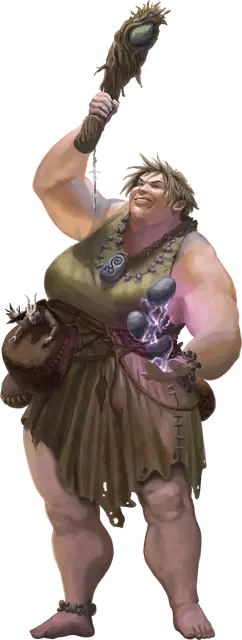

Лавиноподобный холмовой великан
Hill Giant Avalancher
Огромный Великан (Друид), любое мировоззрение

Класс Доспеха 15 (природный доспех)
Хиты 220 (21к12 + 84)
Скорость 40 футов
| мод | спас | ||
|---|---|---|---|
| СИЛ | 21 | +5 | +9 |
| ЛОВ | 8 | −1 | −1 |
| ТЕЛ | 19 | +4 | +8 |
| мод | спас | ||
|---|---|---|---|
| ИНТ | 9 | −1 | −1 |
| МДР | 18 | +4 | +8 |
| ХАР | 10 | +0 | +0 |
Навыки Восприятие +8, Природа +7
Чувства пассивное Восприятие 18
Языки Общий, Великаний
Опасность 12 (8400 опыта)
Бонус мастерства +4
Особенности
Легендарное сопротивление (3/день). Если великан проваливает спасбросок, она может вместо этого сделать спасбросок успешным.
Холмовая руна. У великана есть Холмовая руна, начертанная на камне или другом предмете, которым он владеет. Держа или надевая объект с руной, великан может использовать свое действие Каменная лавина и реакцию Холмовое отражение. Объект с руной имеет КД 15; 20 хитов; и иммунитет к урону некротической энергией, и ядом. Объект восстанавливает все свои хиты в конце каждого хода, но превращается в пыль, если его хиты уменьшаются до 0 или когда великан умирает. Если руна уничтожена, великан может начертать Холмовую руну на объекте, находящемся в его владении, когда он оканчивает короткий или продолжительный отдых.
Действия
Мультиатака. Великан совершает одну атаку Палицей и использует Каменные болы.
Палица. . Рукопашная атака оружием: +9 к попаданию, досягаемость 10 футов, одна цель. Попадание: 18 (3к8 + 5) дробящего урона плюс 9 (2к8) урона звуком.
Каменные болы. Великан призывает три каменных шара, соединенных магическим нитями, и метает их в существо, которое он может видеть в пределах 60 футов от себя. Цель должна преуспеть в спасброске Ловкости Сл 16. В случае провала цель становится опутанной до начала следующего хода великана, а камни взрываются взрывом громовой энергии, который наносит 14 (4к6) урона звуком цели и каждому существу в пределах 10 футов от неё. В случае успеха камни исчезают, не взрываясь.
Использование заклинаний. Великан накладывает одно из следующих заклинаний, используя Мудрость в качестве базовой характеристики (Сл спасброска от заклинаний 16):
• Неограниченно: искусство друидов [druidcraft], указание [guidance];
• 1/день каждого: изменение формы камня [stone shape], каменная стена [wall of stone].
Каменная лавина (требуется Холмовая руна). Гигант вызывает град камней в цилиндре радиусом 20 футов и высотой 40 футов с центром в точке на земле, которую он может видеть на расстоянии 120 футов от себя. Все существа в этой области должны совершить спасбросок Ловкости Сл 16. В случае провала существо получает 28 (8к6) дробящего урона и падает ничком. В случае успеха существо получает только половину этого урона.
Камни превращают землю в этой области в труднопроходимую местность до начала следующего хода великана, когда камни исчезают.
Реакции
Холмовое отражение (требуется Холмовая руна). Сразу после того, как великан получит урон от существа, которое он может видеть в пределах 10 футов от себя, это существо должно совершить спасбросок Телосложения Сл 16, иначе получит 10 (3к6) урона силовым полем и будет отброшено по горизонтали на 10 футов от великана.
Описание
Холмовые великаны, овладевшие рунической магией, обнаруживают тесную связь с природными силами земли и камня. Их магия в сочетании с их размерами и силой помогает им быстро подняться на руководящие посты.
Эти холмовые великаны закутываются в камни, прикрепленные к цепям или веревкам, а затем используют свою магию, чтобы сбивать с ног и избивать своих врагов этими камнями. Эта магия в сочетании с их способностью сокрушать и поглощать своих противников, так же быстро, как поток валунов низвергается с горы, заставляет других великанов называть их лавиноподобными.